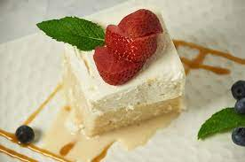

Tres Leches Cake

Tres leches cake is an incredible latin american dessert! It is the best moist cake recipe I've ever tried! This recipe is the top rated tres leches cake recipe on allrecipes.com, so you're in for a treat!
A tres leches cake is a sponge cake that is soaked in three kinds of milk. Though the cake is saturated in liquid, it's not dense — tres leches is known for its light and fluffy texture.
Ingredients
- 1 ½ cups all-purpose flour
- 1 teaspoon baking powder
- ½ cup unsalted butter
- 1 cup white sugar
- 5 eggs
- ½ teaspoon vanilla extract
- 2 cups whole milk
- 1 (14 ounce) can sweetened condensed milk
- 1 (12 fluid ounce) can evaporated milk
- 1 ½ cups heavy whipping cream
- 1 cup white sugar
- 1 teaspoon vanilla extract
Steps
- Gather the ingredients.
- Preheat the oven to 350 degrees F (175 degrees C). Grease and flour a 9x13-inch baking pan.
- Sift flour and baking powder together; set aside.
- Beat sugar and butter together in a large bowl with an electric mixer until light and fluffy. Add eggs and vanilla; beat well. Add flour mixture, about 1/2 cup at a time, mixing until well blended.
- Pour batter into the prepared pan.
- Bake in the preheated oven until a toothpick inserted into the center comes out clean, about 30 minutes. Pierce cake all over with a fork; let cool to room temperature.
- Mix whole milk, condensed milk, and evaporated milk together in a bowl.
- Pour the whole milk, condensed milk, and evaporated milk mixture over the top of the cooled cake and allow to soak in.
- Whip cream, remaining 1 cup of sugar, and 1 teaspoon vanilla in a chilled glass or metal bowl with an electric mixer until thick.
- Spread over the top of the filling.
- Keep cake refrigerated until serving. Enjoy!